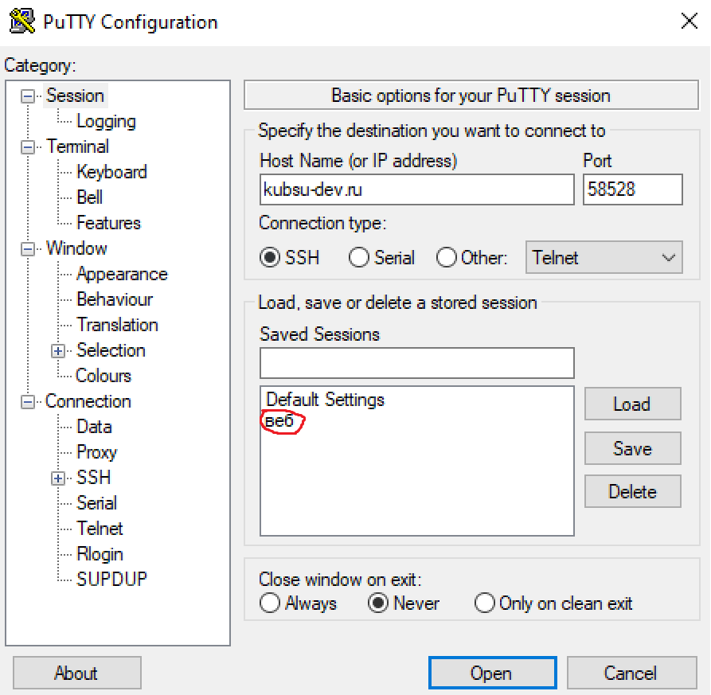
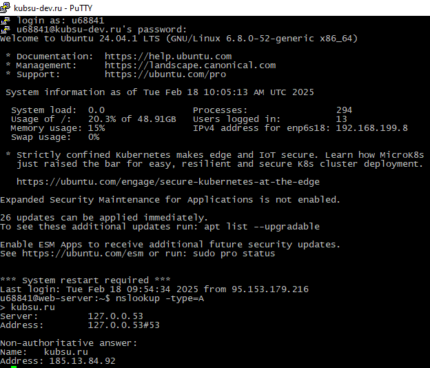
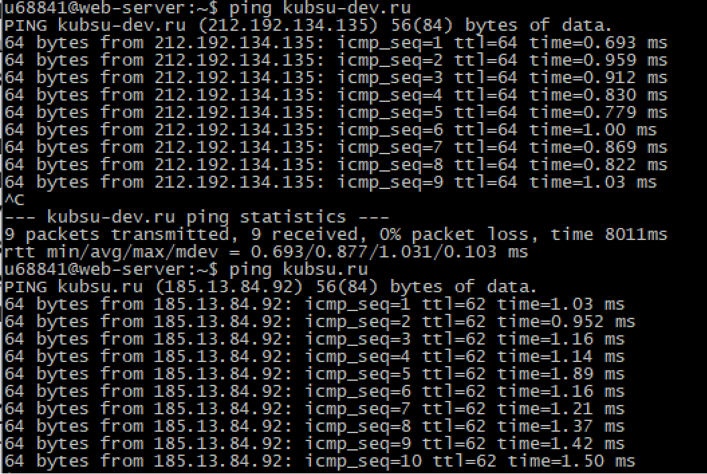
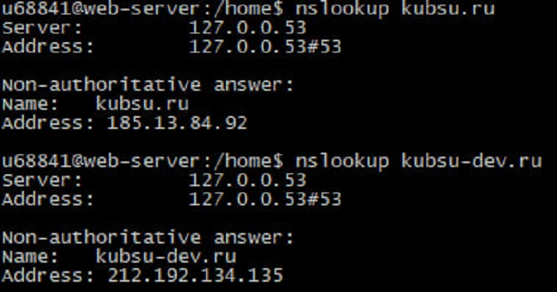
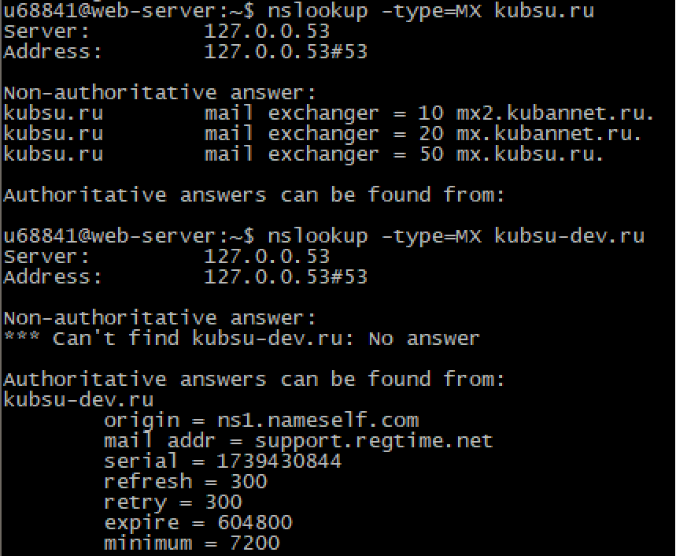
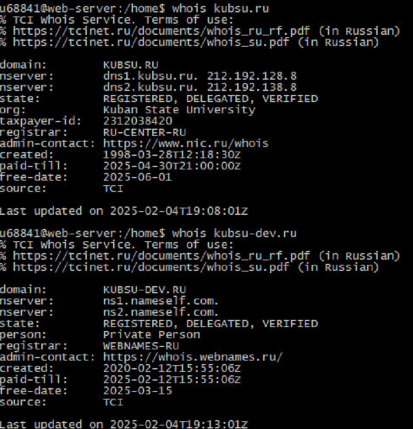
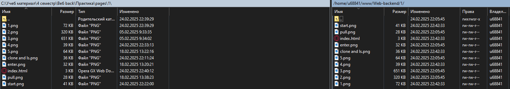
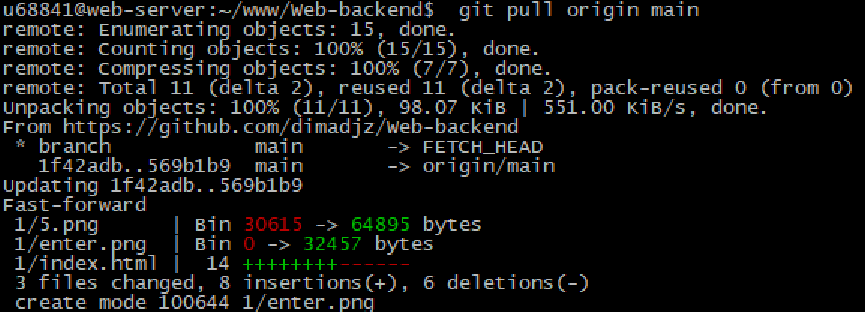

Запуск главного экрана с написанными портом и адресом для подключения к серверу. Выделенное красным - это уже сохранённые данные для входа
Подключение через Putty с выводом данных о сервере, версии и ядро Линукса - ubuntu, использовании памяти сервера, количества текущих процессов, ipv4 адреса и последним подключением к серверу
Ping, показывает время задержки передачи данных от сервера к пользователю
A-записи показывает ipv4 адрес доменов и пользователя
MX-записи показывает настройки почтового сервера для имени домена
Whois показывает владельца сервера и данные о нем
"Git clone" клонирует репозиторий с гитхаба на сервер. Команда "ls" показывает, что хранится в директории на выделенном сервере

WinSCP показывает файлы на сервере и на ПК
Команда git pull добавляет изменения на сервер с гитхаба
